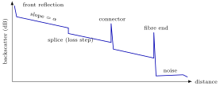

Scattering processes
| process | origin | shift | use |
|---|---|---|---|
| Rayleigh | frozen density fluctuations | none | loss floor, OTDR |
| Raman | molecular vibrations | ≈ 13 THz | DTS, Raman amplifiers |
| Brillouin | acoustic waves (phonons) | ≈ 11 GHz | strain/T sensing, SBS |
Rayleigh: ; ≈ 0.15 dB/km at 1550 nm, hence ≈ 0.29 dB/km at 1310 nm and ≈ 1.7 dB/km at 850 nm. Brillouin: light Bragg-reflects on a sound wave moving at km/s, Doppler-shifted by GHz. Above a threshold of a few mW in long fibres, stimulated Brillouin scattering reflects the launched power back: it limits narrow-linewidth transmitters (power per linewidth).
OTDR (derivation)
A pulse of duration  is launched; at time
is launched; at time  the detector sees light backscattered at (round trip) (Barnoski and Jensen 1976). Two events closer than merge. The backscattered power from has crossed the fibre twice: , and the trace in dB falls with slope ; instruments divide by 2 and display one-way loss. A splice is a step down, a connector or the far end a reflection spike followed by a step; dynamic range (dB between initial backscatter and noise floor) sets the maximum length; averaging traces gains dB.
the detector sees light backscattered at (round trip) (Barnoski and Jensen 1976). Two events closer than merge. The backscattered power from has crossed the fibre twice: , and the trace in dB falls with slope ; instruments divide by 2 and display one-way loss. A splice is a step down, a connector or the far end a reflection spike followed by a step; dynamic range (dB between initial backscatter and noise floor) sets the maximum length; averaging traces gains dB.
Picture: an OTDR trace

Distributed temperature and strain sensing
Raman DTS: the anti-Stokes line grows with temperature as (population of the vibrational level), the Stokes line barely changes; their ratio along the OTDR time axis maps temperature with ≈ 1 m resolution over 10 km. Brillouin (BOTDR/BOTDA): shifts by ≈ 1 MHz/K and ≈ 0.05 MHz/µε, giving both. Phase-sensitive OTDR (coherent source) detects vibrations: intrusion detection along borders and pipelines.
Worked examples
- Resolution: 10 ns pulses,
 : m. An echo after 100 µs comes from km.
: m. An echo after 100 µs comes from km. - Loss from the trace: the one-way trace falls from −20.0 to −27.0 dB over 20 km, with a 0.3 dB step at 12 km: dB/km (1310 nm), splice loss 0.3 dB.
- Raman DTS: THz: at 20 °C and 0.183 at 100 °C — a 60% change of the anti-Stokes/Stokes ratio over 80 K. At 1550 nm the Raman lines sit at ≈ 1664 nm (Stokes) and ≈ 1450 nm (anti-Stokes).
Engineering applications
Fault location and acceptance testing of installed cables, monitoring of PON drops, fire detection in tunnels and temperature profiles in oil wells (DTS), strain monitoring of dams and pipelines (Brillouin), perimeter security (φ-OTDR); Raman scattering also amplifies signals (distributed Raman amplifiers, amplifiers).
Exam-style exercise
An OTDR uses 100 ns pulses at 1550 nm (), has 28 dB dynamic range, and the fibre loses 0.2 dB/km with a splice every 4 km (0.1 dB). (a) Spatial resolution. (b) Longest measurable fibre. (c) Repetition period to avoid overlapping traces on that length.
Solution
(a) m. (b) Loss per km dB → km (one-way loss, as displayed). (c) Round trip ms: repetition rate ≤ 820 Hz.
Pitfall
The round trip appears twice: in and in the  slope of the raw trace. Forgetting the 2 doubles the distance or the loss.
slope of the raw trace. Forgetting the 2 doubles the distance or the loss.